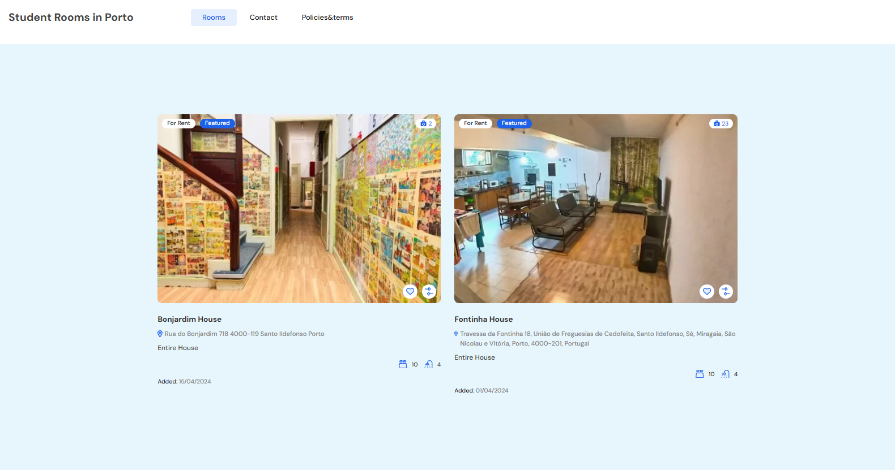
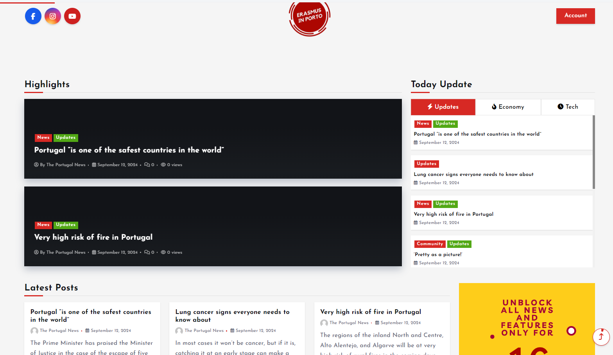

Erasmus in Porto Wordpress site - with Apple and Android App with translated News for International Students
The Erasmus in Porto WordPress website is designed to be easier to have a student rooms hub to manage where students can look for their own future room. It can have rooms from multiple owners and the owners can manage themseselves the data they want to share about the house and the roomsthrough multiple users with no coding experience. The use of WordPress allows the use of a plugin that converts the website into apps that can be loaded into the Apple and Google Play stores and adhering to their requirements.
This helps users stay informed about the latest available rooms during their stay in Porto.
The Erasmus in Porto WordPress website is designed to be easier to manage through multiple users with no coding experience. The use of WordPress allows for a plugin to convert it into an app. This process taught me the complexities of getting apps into stores and adhering to their requirements.
- Translated local news
- Notifications on trending topics
- Interactive comments section
- User-friendly chat system for discussions
- Tailored for international students/travelers
This helps users stay informed about the latest events and news during their stay in Porto.
Upcoming Features:
- Event Highlights: Special notifications about local events and cultural activities tailored for international students.
- Language Tips: Daily language tips to help users learn common Portuguese phrases and integrate better.
- Location-Based Recommendations: Personalized suggestions for restaurants, cafes, and activities based on the user's current location within Porto.
- Social Groups: Users can create and join groups (e.g., sports, culture, or student meetups) to socialize and organize events in Porto.
- Crisis Alerts: Emergency notifications (e.g., strikes, public transport issues) to keep users informed of any sudden changes in the city.
Rooms in Porto Wordpress site

Your WordPress site for a private owner in Porto is designed to showcase two centrally located buildings, offering detailed listings of available houses and rooms. Each listing includes high-quality images, in-depth descriptions, and key amenities. The site features contact forms for scheduling both personal and virtual tours, ensuring seamless communication for potential tenants. With an intuitive and mobile-friendly layout, it enhances the property rental experience while making it easier for interested clients to inquire and book visits.
Erasmus in Porto Wordpress site with RSS feed translated News for International Students
The Erasmus in Porto wordpress website that pushes through multiple rss feeds with news about Portugal that are already translated into english and gives a breef resume format similar to Twitter, with features designed for international students and travelers staying in Porto.
To be created this site required the following work:
Technical Proficiency:
@@ -230,7 +207,7 @@
Rooms in Porto Wordpress site
User Experience (UX) Understanding:
Knowledge of creating user-friendly interfaces and ensuring a seamless experience for users.


Adaptability:
@@ -251,22 +228,32 @@
Rooms in Porto Wordpress site
Insight into user demographics and market trends, enabling the creation of relevant and valuable app features for the target audience.
This Interactive Portfolio with Resume and Projects in HTML
This project involved building an interactive portfolio website that showcases my resume and key projects. It provided a platform for potential employers to view my skills and work experience.
- Showcase Projects: Included sections for various projects, with images and descriptions.
- Resume Download: Provided a downloadable version of my resume for easy access.
- Contact Form: Allowed visitors to reach out to me directly through the website.
This portfolio demonstrates my web development skills and my ability to create an engaging user experience.